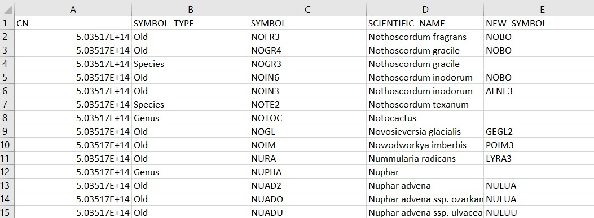

If you’re like me, you work with a lot of data files in your daily analytical work. Despite the increase in cloud computing, reading in files locally to the machine your working on is common.
You want a rapid summary of your data and don’t want to wait forever for your computer to read in the file you’re working with. To do this, you want to use functions that are efficient and effective for working with large amounts of data.
If you’re using R, there are several functions to read in data depending on your needs. This post summarizes three common functions in R that read in data and compares their speed.
The plant dictionary data set
The US Department of Agriculture’s Forest Inventory and Analysis program collects information on the status and trends of forests across the country. The REF_PLANT_DICTIONARY data table is an important one contained on the FIA Datamart webpage.
This data table contains 81,489 rows and 39 variables and is stored as a comma separated data file (i.e., a .csv format). The tables contains information on all of the plant species recorded in the FIA database:
## # A tibble: 6 x 39
## CN SYMBOL_TYPE SYMBOL SCIENTIFIC_NAME NEW_SYMBOL NEW_SCIENTIFIC_NA~
## <dbl> <chr> <chr> <chr> <chr> <chr>
## 1 5.04e14 Old NOFR3 Nothoscordum fragrans "NOBO" "Nothoscordum bor~
## 2 5.04e14 Old NOGR4 Nothoscordum gracile "NOBO" "Nothoscordum bor~
## 3 5.04e14 Species NOGR3 Nothoscordum gracile "" ""
## 4 5.04e14 Old NOIN6 Nothoscordum inodorum "NOBO" "Nothoscordum bor~
## 5 5.04e14 Old NOIN3 Nothoscordum inodorum "ALNE3" "Allium neapolita~
## 6 5.04e14 Species NOTE2 Nothoscordum texanum "" ""
## # ... with 33 more variables: COMMON_NAME <chr>, CATEGORY <chr>, FAMILY <chr>,
## # GROWTH_HABIT <chr>, DURATION <chr>, US_NATIVITY <chr>,
## # STATE_DISTRIBUTION <chr>, STATE_AND_PROVINCE <chr>,
## # SCIENTIFIC_NAME_W_AUTHOR <chr>, GENERA_BINOMIAL_AUTHOR <chr>,
## # TRINOMIAL_AUTHOR <chr>, QUADRINOMIAL_AUTHOR <chr>, XGENUS <chr>,
## # GENUS <chr>, XSPECIES <chr>, SPECIES <chr>, SSP <chr>, XSUBSPECIES <chr>,
## # SUBSPECIES <chr>, VAR <chr>, XVARIETY <chr>, VARIETY <chr>, ...The data set is a large enough one that we will see differences in the speed at which different functions read in the data.
read.csv()
One of the most common functions for reading in data in R is read.csv(). This function is available in the base version of R and is used regularly for reading in data:
read.csv('C://Users//MyUser//Data//REF_PLANT_DICTIONARY.csv')read_csv()
There’s a slight difference in the name of this function, but it leads to a big impact. The read_csv() function is available from the readr package, one of the many packages available in the tidyverse megapackage. The only difference is using the underscore instead of a period.
The primary difference in the read_csv() function is that instead of treating the data as a data frame, it treats it as a tibble, the tidyverse’s implementation of a data set in R:
library(tidyverse)read_csv('C://Users//MyUser//Data//REF_PLANT_DICTIONARY.csv')fread()
The data.table package is well known to work well with large data sets. For reading in .csv files, the fread() function works well. Like the read.csv() function, after it reads in the data it is stored as a data frame:
library(data.table)fread('C://Users//MyUser//Data//REF_PLANT_DICTIONARY.csv')To compare speeds of the different function, we can run the system.time() function
system.time(read.csv('C://Users//MyUser//Data//REF_PLANT_DICTIONARY.csv'))
system.time(read_csv('C://Users//MyUser//Data//REF_PLANT_DICTIONARY.csv'))
system.time(fread('C://Users//MyUser//Data//REF_PLANT_DICTIONARY.csv'))## user system elapsed
## 2.05 0.08 2.16## user system elapsed
## 0.92 0.15 0.55## user system elapsed
## 0.62 0.10 0.42We can see that the read.csv() function takes the longest time to read in the data, followed by read_csv(). The fread() function takes the shortest time to read in the data. (For reference, I’m running an i7 processor with four cores on a laptop that’s four years old.)
There are pros and cons for each of the functions depending on your needs. For speed, the fread() function is quickest to get data read into your session. Analysts that work within the tidyverse suite of packages will find the read_csv() function advantageous because it imports and stores tables as tibbles. I’ve rarely had an issue with the read.csv() function, and it’s considered the standard function for getting data into R.
Depending on your needs and the size of the data you’re working with, consider implementing these functions for reading in data into R in the future.
–
By Matt Russell
Email Matt with any questions or comments. Sign up for The Landing for monthly in-depth analysis on data and analytics in the forest products industry.